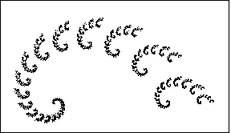

To find rules for fractal spirals, recall finding scaling, reflection, rotations and translation values for r, s, theta, phi, e, and f from the previous lab Finding IFS for Fractal Images.
To discuss finding IFS rules for spirals, consider this example fractal spiral.
|  |
| A spiral fractal |
The most obvious way to decompose this spiral into smaller copies of itself resolves the spiral as infinitely many smaller spirals.
Some experimentation reveals a much better decompostion, into only two pieces.
Finally, we compute the probabilities of applying the different transformations.
Return to Spiral Fractals from IFS.